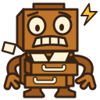

Actual sizes / light background

Actual sizes / dark background
Same family / 64 × 64


Large render / 768 × 768
Reference check
- Copper filing-cabinet body and square head with a top tab.
- Wide eyes, uneven worried brows, and gritted teeth.
- Curved hose arms, three-finger hands, and broad feet.
- Open drawers, cream paper overflow, and one warning spark.
- The room, backlog gauge, and lettering are omitted to keep this an icon.
- At 16 pixels, judge the anxious face and cabinet silhouette, not individual teeth.